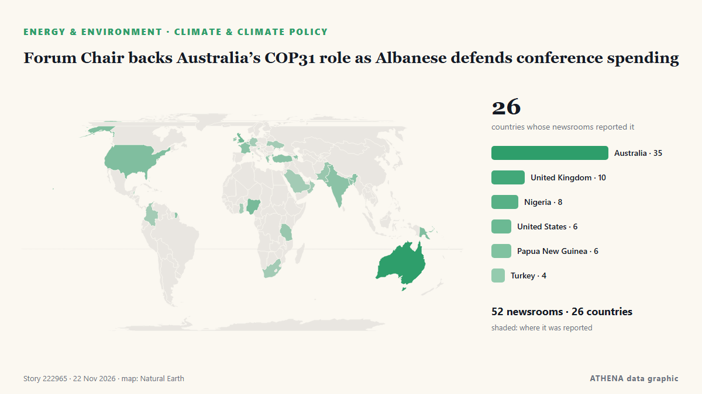

Energy, Resources & Environment
SponsoredPresented by  Cybernetics and Artificial Intelligence Lab Welcome to the Cybernetics and Artificial Intelligence Laboratory, established at the Department of Business Administration of the National and Kapodistrian University of Athens. The lab is headed by Professor Dimitrios Thomakos. The lab aims to do research that can be published in top venues. Our research uses tools and methods of Artificial Intelligence, and lies in the following areas: - Forecasting - Decision making - Cyber security - Finance We are always looking forward to collaborating with exceptional students!
Cybernetics and Artificial Intelligence Lab Welcome to the Cybernetics and Artificial Intelligence Laboratory, established at the Department of Business Administration of the National and Kapodistrian University of Athens. The lab is headed by Professor Dimitrios Thomakos. The lab aims to do research that can be published in top venues. Our research uses tools and methods of Artificial Intelligence, and lies in the following areas: - Forecasting - Decision making - Cyber security - Finance We are always looking forward to collaborating with exceptional students!

Climate & climate policyForum Chair backs Australia’s COP31 role as Albanese defends conference spending
Australian Prime Minister Anthony Albanese has defended the cost of hosting and participating in COP31, saying climate action is a matter of Australia's national interest, regional security and its… from Post-Courier (PNG)
| 12 Nov | 90 |
|---|---|
| 13 Nov | 74 |
| 14 Nov | 42 |
| 15 Nov | 51 |
| 16 Nov | 109 |
| 17 Nov | 87 |
| 18 Nov | 87 |
| 19 Nov | 81 |
| 20 Nov | 52 |
| 21 Nov | 44 |
| 22 Nov | 36 |
| 23 Nov | 74 |
| 24 Nov | 45 |
| 25 Nov | 1 |
Burnham calls for ambition after ‘deeply disappointing’ Cop31 disagreements
The Prime Minister warned the deal on the table risked ‘taking backwards steps on climate’, which was why the UK could not support it. from Evening Standard (London)
India in French giant Saint-Gobain's top 5 markets
Air Liquide Egypt has started supplying Saint-Gobain’s glass manufacturing facilities in Ain Sokhna through an integrated industrial gases pipeline network, under a new long-term agreement supporting… from Daily News Egypt
China, India set for record Russian oil imports in 2026
China and India are on track for record Russian oil imports this year, plugging a supply gap caused by the Iran war, as US sanctions waivers eased purchases and Ukrainian drone attacks knocked out… from Business Recorder
Caricom disappointed at outcome of COP31
GEORGETOWN, Guyana (CMC) — The 15-member Caribbean Community (Caricom) grouping Monday expressed “its deep disappointment” that delegates who attended the United Nations Climate Change Conference… from Jamaica Observer
EU to Seek Overhaul of UN Climate Consensus Decisions After COP31 Failure
The European Union will propose to the UN to review the consensus decision-making model of the COP climate conferences after the latest summit ended without a deal but with a lot of quarrels about… from OilPrice.com
Ukraine to issue formal protest to IAEA over appointment of sanctioned Russian official as Grossi's deputy
Ukrainian Foreign Minister Andrii Sybiha has instructed diplomats to issue a formal demarche to the International Atomic Energy Agency (IAEA) and deliver a note of protest over the appointment of… from Ukrinform (English)
China extends pause in controls on critical mineral exports to US
Beijing’s dominance of supply chains has given it leverage against Washington. from Financial Times - Markets
Iran Faces a Deepening Natural Gas Crisis Ahead of Winter
Iran is heading into winter facing a worsening natural gas shortage, as damage to key processing facilities during the war with the United States and Israel compounds years of chronic supply deficits. from OilPrice.com
The climate card China has yet to play
No region has been as vocal and consistent on impact of climate change on habitability and migration as the Pacific. from Post-Courier (PNG)
Democrats win largest US House majority since 1992: media
Democrats have won the largest majority in the US House of Representatives in more than three decades, after Chuck Hubbard defeated Republican representative Virginia Foxx in North Carolina, US media… from Vanguard
“K” Line orders LPG dual-fuel VLGC pair from South Korea
Kawasaki Kisen Kaisha (“K” Line) has today (24 November) announced that it has signed agreements with South Korea-based HD Hyundai Samho Co. for the construction of two LPG dual-fuel very large gas… from Bunkerspot
India’s flood support helps to rebuild its influence in Nepal
New Delhi pledges $1.62 billion for Nepal reconstruction and development. from The Irish News (Belfast)
Vitol to Start Construction on $2.3b South African LNG Project in 2028
A consortium led by Vitol's Engen unit expects to begin construction of a 40 billion rand ($2.3 billion) integrated LNG-to-power project in South Africa late in 2028, the global commodities trader… from MarineLink
San Francisco faces historic flood threat as major storm nears
San Francisco is bracing for potentially historic coastal flooding this week as unusually high tides and an approaching storm threaten to inundate roads and low-lying neighborhoods during the busy… from Livemint
COP31 ends in failure as countries split over fossil fuels, climate finance
COP31 ended without a consensus deal for the first time since 2009. from Ars Technica
‘Worst COP ever’: Climate talks collapse after draft deal fails to include fossil fuels
Governments and campaigners rejected the "cover decision" drafted at the U.N.'s climate summit, COP31, on Sunday. from CNBC World
Indonesia steps up irrigation push to sustain food self-sufficiency
Indonesia's Public Works and Agriculture ministries are strengthening irrigation infrastructure to sustain food ... from Antara (English)
Musadik Malik visits Humayun’s tom in India
Viral clip falsely claims Musadik Malik blamed Pakistan's army for rising terrorism during a Delhi speech. from Express Tribune
Israel's bombardment has turned Gaza into 'toxic wasteland'
New research suggests more than 99 per cent of the Gaza Strip shows signs of contamination from Israeli attacks. from ABC News Australia
Magnitude 5.3 earthquake strikes Nepal, rattles eastern India
There were no immediate reports of casualties or damage. from TASS (English)
Samsung and DNV team up on nuclear-powered LNG carrier
Samsung Heavy Industries, Tesser Atomics, NTNU and DNV to develop nuclear-powered LNG carrier concept for transatlantic trade. from Seatrade Maritime
HMM signs green shipping deal with Nextpower
South Korean shipping company HMM said Monday it had signed a deal allowing US solar technology company Nextpower to reflect emissions reductions from HMM’s use of lower-carbon marine fuels in its… from Korea Herald
San Francisco is enjoying an AI boom, but worries about a crash are growing
AI employees in the industry's epicentre - San Francisco - worry that the sector is overheated. from BBC Business
Kuala Lumpur otters raise river revival hopes
Beneath a tangle of highway in the Malaysian capital, a family of otters rolls around in a patch of riverside sand, delighting the few passersby who notice them. from Mongabay
Key outcomes agreed at the UN climate talks in Antalya
The COP31 climate talks in Antalya, Turkey, have failed to reach agreement on a “pact” that lacked clear references to… from Carbon Brief
Power Supply Situation in Odesa Region Remains Difficult
Following Russia's massive overnight attack on November 20, energy workers have managed to partially stabilise electricity supplies in the affected regions, but the situation remains difficult in the… from Ukrinform (English)
Presidential villa suffers water and power cuts, Nigerian leader says
Bola Tinubu says he was shaving last week when the water cut out - an experience familiar to many Nigerians. from BBC News
Fight over fossil fuels leaves COP31 climate talks in deadlock
Countries from nearly 200 countries are in a deadlock to try and get a new global climate agreement. from BBC News
Villarreal say Pepe's eye surgery not linked to watching solar eclipse
Former Arsenal forward Nicolas Pepe returned to action wearing a protective mask after being out for two weeks following an operation. from Free Malaysia Today
UN Climate Talks End Without Major Deal
COP31 negotiations collapse after deep divisions over fossil fuels and climate finance, leaving key climate commitments unresolved. from News of Bahrain
Britain digging new reservoirs to fight persistent droughts
Havant Thicket Reservoir will be the first to enter service in England since 1992. from The Straits Times
LR approves new Rules for nuclear-powered ships and offshore units
The Class Rules are suitable for all ship- and offshore unit- types, are technology agnostic and set the goals and functional requirements for integrating nuclear power with maritime. from Ports Europe
'The town is gone': Brazil storm death toll rises to 5
Rain and high winds battered Tupancireta early Friday, tearing up buildings and about 100 trees in the municipality that is home to 20,000 people. from Channels TV
Libya’s Oil Output Plunges as Armed Groups Shut Key Pipelines
Libya’s oil production has crashed by about 350,000 barrels per day (bpd) after an outlaw group closed a valve on the pipeline transporting crude oil from Sharara, the country’s biggest oilfield, the… from OilPrice.com